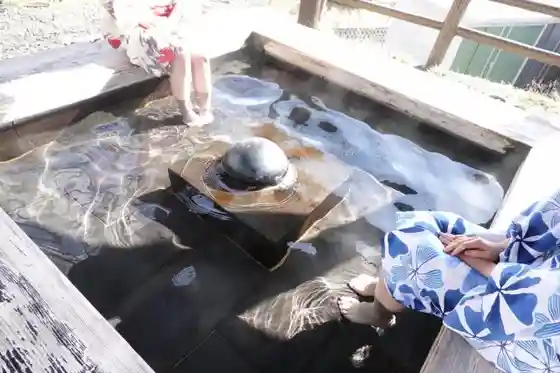
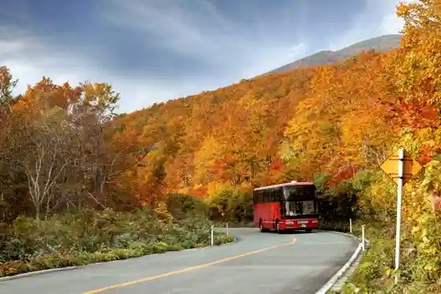
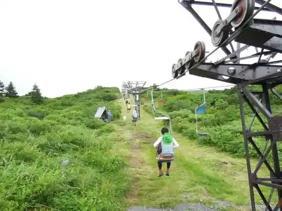
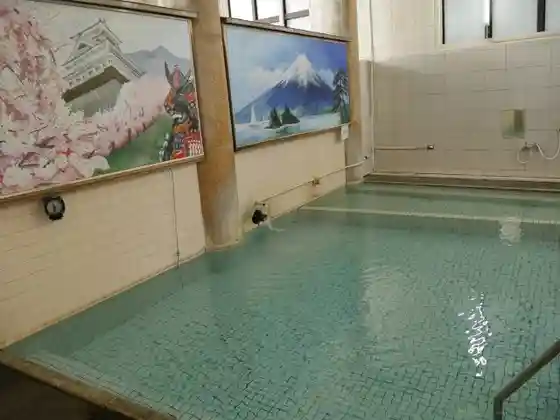

Kami no Yama Onsen
Kaminoyama, Yamagata · 023-672-0839 · Official / source link

Zao Eko Line
Kaminoyama, Yamagata · 023-672-0839 · Official / source link

Zao Karida Rifuto
Kaminoyama, Yamagata · 023-679-2311 · Official / source link

Kaminoyama Shiro Local History Museum
Kaminoyama, Yamagata · 023-673-3660 · Official / source link
Shita Oyu Kyodo Bath
Kaminoyama, Yamagata · 080-7734-3101 · Official / source link

Tagadawainarii
Kaminoyama, Yamagata · 023-672-0040 · Official / source link
Kaminoyama Han Buke Residence
Kaminoyama, Yamagata · 023-672-1111 · Official / source link
Takahashi Furutsu Land HATAKE STYLE
Kaminoyama, Yamagata · 023-673-4706 · Official / source link
Futsuka Town Kyodo Bath
Kaminoyama, Yamagata · Official / source link
Yamagata Cherii Land (Kaminoyama Kanko Furutsu Sono)
Kaminoyama, Yamagata · 023-674-2345 · Official / source link
Zao Kogen Bo Taira
Kaminoyama, Yamagata · 023-672-1111 · Official / source link
Rinawarudo
Kaminoyama, Yamagata · 023-672-1614 · Official / source link
Kami no Yama Onsen Tourist Information
Kaminoyama, Yamagata · 023-672-5703 · Official / source link
Ushu Kaido Narage Yado
Kaminoyama, Yamagata · 023-672-0839 · Official / source link
Hanasaki Yama Lookout (Koibito no Seichi)
Kaminoyama, Yamagata · 023-672-0839 · Official / source link
Zao Raizawarudo Ofuku Rifuto Ken
Kaminoyama, Yamagata · 023-672-0839 · Official / source link
Yamagata Wainkavu
Kaminoyama, Yamagata · 023-672-5703 · Official / source link
Saito Mokichi Memorial Museum
Kaminoyama, Yamagata · 023-672-7227 · Official / source link
Sawa no Yu (Arayu Kyodo Bath)
Kaminoyama, Yamagata · 023-616-4858 · Official / source link
Harusame Iori
Kaminoyama, Yamagata · 023-672-1111 · Official / source link
Kurikawa Inari Shrine
Kaminoyama, Yamagata · 023-672-3520 · Official / source link
Ki Village Kanko Orchard
Kaminoyama, Yamagata · 023-674-2831 · Official / source link
Onda no Kami Marsh
Kaminoyama, Yamagata · 023-679-2311 · Official / source link
Oyado Mori no Oto
Kaminoyama, Yamagata · 0570-03-0810 · Official / source link
Zao Sennin Sawa Aisu Garden no Hyobaku
Kaminoyama, Yamagata · 023-672-0839 · Official / source link
Narage Yado Tanno Konnyaku Konnyaku Bansho
Kaminoyama, Yamagata · 023-674-2351 · Official / source link
Hayama Koshu Bath
Kaminoyama, Yamagata · 023-673-3649 · Official / source link
Kaminoyama Shiro no Ashiyu
Kaminoyama, Yamagata · 023-672-0839 · Official / source link
Guriin'eko Go (Natsu) / Howaitoeko Go (Fuyu)
Kaminoyama, Yamagata · 023-679-2311 · Official / source link
Kami no Yama Onsen Rentasaikuru
Kaminoyama, Yamagata · 023-672-5703 · Official / source link
Uddei Farm & Wainarii
Kaminoyama, Yamagata · 023-674-2343 · Official / source link
DEEP ZAO Zao Bo Taira Highlands no Juhyogen
Kaminoyama, Yamagata · 023-672-0839 · Official / source link
Yu Town no Ashiyu (Tsuru no Yasumiishi)
Kaminoyama, Yamagata · 023-672-0839 · Official / source link
Arima Kan
Kaminoyama, Yamagata · 023-672-2511 · Official / source link
Tsukioka Park
Kaminoyama, Yamagata · 023-672-1111 · Official / source link
Zao Raizawarudo
Kaminoyama, Yamagata · 023-679-2311 · Official / source link
Ventengaruten Na no Hanahata
Kaminoyama, Yamagata · 023-672-1111 · Official / source link
Saito Mokichi no Seika
Kaminoyama, Yamagata · 0237-672-1111 · Official / source link
Tsukioka Shrine
Kaminoyama, Yamagata · 023-672-2636 · Official / source link
Zenraidingu Club
Kaminoyama, Yamagata · 090-4883-3134 · Official / source link
Shin Cho Onsen Kyodoyokujo (Tsuru no Yu)
Kaminoyama, Yamagata · Official / source link
Meigetsu So
Kaminoyama, Yamagata · 0120-72-0330 · Official / source link
Kuaoruto Hayama Kosu
Kaminoyama, Yamagata · 023-672-1111 · Official / source link
Zao Raizauddeirojji
Kaminoyama, Yamagata · 023-679-2311 · Official / source link
Zao Sarukura Ski Area
Kaminoyama, Yamagata · 023-679-2211 · Official / source link
Zao Sarukura Resutohausu
Kaminoyama, Yamagata · 023-679-2211 · Official / source link
Kuaoruto Zao Kogen Bo Taira Kosu
Kaminoyama, Yamagata · 023-672-1111 · Official / source link
Miyuki Park
Kaminoyama, Yamagata · 023-672-1111 · Official / source link
Hosen Tera
Kaminoyama, Yamagata · 023-672-1111 · Official / source link
Maekawa Ashiyu
Kaminoyama, Yamagata · 023-672-0839 · Official / source link
Kaya Taki
Kaminoyama, Yamagata · 0236-672-0839 · Official / source link
Mizu Kishiyama Kannon Tera (Shingonshu) / Saijo Sanju San Kannon Dai 10 Ban Ue no Yama Kannon
Kaminoyama, Yamagata · Official / source link
Narage Yado Wakimoto Jin Takizawa Ya (Kyu Tanno Ie)
Kaminoyama, Yamagata · 023-674-3125 · Official / source link
Hayama Ashiyu (Yu Ami Jizo)
Kaminoyama, Yamagata · 023-672-0839 · Official / source link
Kanko Takushii Kaminoyama Eigyosho
Kaminoyama, Yamagata · 023-672-2323 · Official / source link
Kannon Taki
Kaminoyama, Yamagata · 023-679-2311 · Official / source link
Arayu no Ashiyu
Kaminoyama, Yamagata · 023-672-0839 · Official / source link
ZAO Tairagura
Kaminoyama, Yamagata · 023-677-0283 · Official / source link
Fudo Taki (Kaminoyama)
Kaminoyama, Yamagata · 023-679-2311 · Official / source link
Kuaoruto Nishiyama Kosu
Kaminoyama, Yamagata · 023-672-1111 · Official / source link
Himawari Farm
Kaminoyama, Yamagata · 023-674-3443 · Official / source link
DROP
Kaminoyama, Yamagata · Official / source link
Saito Kanko Orchard
Kaminoyama, Yamagata · 023-674-2278 · Official / source link
Kuaoruto O Shimizu Juhyogen Kosu
Kaminoyama, Yamagata · 023-672-1111 · Official / source link
Beruddovinyado
Kaminoyama, Yamagata · 023-674-6020 · Official / source link
Kuaoruto Kokuzo Yama Kosu
Kaminoyama, Yamagata · 023-672-1111 · Official / source link
Kuaoruto Sankichi Yama Kosu
Kaminoyama, Yamagata · 023-672-1111 · Official / source link
Yamagata Purin
Kaminoyama, Yamagata · 023-665-1955 · Official / source link
Hachiman Shrine (Kaminoyama)
Kaminoyama, Yamagata · 023-672-1111 · Official / source link
Takamatsu Yama Komyo In (Shingonshu) / Saijo Sanju San Kannon Dai 11 Ban Takamatsu Kannon
Kaminoyama, Yamagata · Official / source link
Maekawa Dam
Kaminoyama, Yamagata · 023-630-2616 · Official / source link
Saito Mokichi Kahi / Hosen Tera
Kaminoyama, Yamagata · 023-672-7227 · Official / source link
Taka Sen Tera no Shidare Sakura
Kaminoyama, Yamagata · 023-672-1111 · Official / source link
Kyu Ogata Ie House
Kaminoyama, Yamagata · 023-672-1111 · Official / source link
O Shimizu no Nejire Sugi
Kaminoyama, Yamagata · 023-672-1111 · Official / source link
Ishizaki Shrine
Kaminoyama, Yamagata · Official / source link
Saito Mokichi Kahi / Zao Kumano Dakeyama Itadaki
Kaminoyama, Yamagata · 023-672-7227 · Official / source link
Makino Kanko Furutsu Sono
Kaminoyama, Yamagata · 023-674-3305 · Official / source link
Asahi Noboru Sakura
Kaminoyama, Yamagata · 023-672-1111 · Official / source link
Ho Kari Fudo Taki
Kaminoyama, Yamagata · Official / source link
Saito Mokichi Kahi / Tsukioka Park
Kaminoyama, Yamagata · 023-672-7227 · Official / source link
Saito Mokichi Kahi / Miyuki Park
Kaminoyama, Yamagata · 023-672-7227 · Official / source link
Saito Mokichi Kahi / Mina Sawa Furutsu Line
Kaminoyama, Yamagata · 023-672-7227 · Official / source link
Saiko Tera (Kaminoyama)
Kaminoyama, Yamagata · 023-672-0833 · Official / source link
Voyage de YUUAI
Kaminoyama, Yamagata · 023-616-6954 · Official / source link
Kumano Shrine (Kaminoyama)
Kaminoyama, Yamagata · 023-672-1111 · Official / source link
Saito Mokichi Kahi / Kanazawa Jiemon Niwa (Shitei So no Hoka)
Kaminoyama, Yamagata · 023-672-7227 · Official / source link
Raizaresutoran
Kaminoyama, Yamagata · 023-679-2311 · Official / source link
Shobu Kawa Dam
Kaminoyama, Yamagata · 023-672-1111 · Official / source link
Saito Mokichi Kahi / Zao Bo Taira
Kaminoyama, Yamagata · 023-672-7227 · Official / source link
Shi Jinseki to
Kaminoyama, Yamagata · 023-672-1111 · Official / source link
Japan'ekotorakku (Yamagatazao Hirukuraimuruto)
Kaminoyama, Yamagata · Official / source link
Tsuchi Yagura Kofun Gun
Kaminoyama, Yamagata · 023-672-1111 · Official / source link
Bo Taira no Tsutsuji
Kaminoyama, Yamagata · 023-672-1111 · Official / source link
Saito Mokichi Kahi / Kyozuka Yama
Kaminoyama, Yamagata · 023-672-7227 · Official / source link
Saito Mokichi Kahi / Harusame Iori
Kaminoyama, Yamagata · 023-672-7227 · Official / source link
(Hanamori Mizumi) Nama Igawa Dam
Kaminoyama, Yamagata · 023-674-3532 · Official / source link
Gongendo no Shidare Sakura (Furisode Sakura)
Kaminoyama, Yamagata · 023-672-1111 · Official / source link
Mokichi Memorial Museum Zen'eki
Kaminoyama, Yamagata · 050-2016-1600 · Official / source link